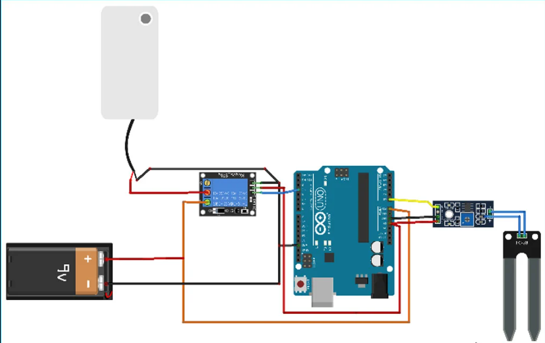
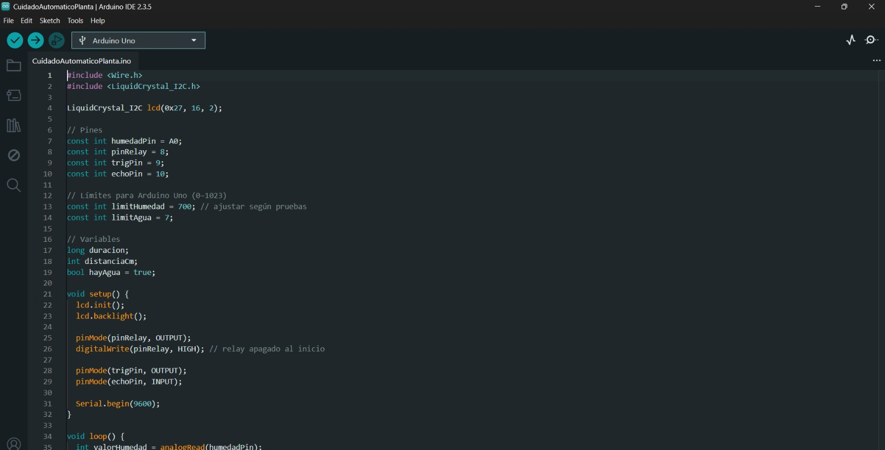

Un sistema automatizado que monitorea las condiciones de una planta y actúa por ella: la riega cuando el suelo está seco, recomienda moverla al sol o a la sombra, verifica que haya agua disponible y muestra todo en una pantalla LCD.
Lo que empezó como un circuito de riego básico terminó siendo un dispositivo prácticamente independiente.
A pesar del vínculo que tenemos, los humanos y las plantas no hablamos el mismo idioma.— A Silent Relationship
Antes de conectar un solo cable, exploré la relación entre las personas y las plantas, y cómo un dispositivo podía ayudar a que esa relación funcione mejor:
El objetivo era que el dispositivo cuidara la planta sin intervención humana, cubriendo sus necesidades básicas:
El proyecto partió de un circuito básico de riego: un sensor de humedad conectado al Arduino a través de un módulo comparador, y un relay que enciende una bomba de agua alimentada por una batería externa.

Diagrama del circuito inicial.
Al armar el circuito real fui sumando componentes para que el dispositivo no dependiera de nadie: una fotoresistencia para leer la luz, una pantalla LCD para comunicarse con las personas y un sensor de ultrasonido para saber cuándo se acaba el agua.
También cambiamos la fuente de energía: en lugar de la batería de 9V del diagrama, usamos dos Arduino Mega. Uno maneja todo el circuito (sensores, pantalla, relay y lógica) y el otro funciona solo como fuente de poder, conectando únicamente sus pines de voltaje y GND para alimentar la bomba.
El programa, escrito en el Arduino IDE, se organiza en bloques claros. Al inicio se incluyen las librerías Wire.h y LiquidCrystal_I2C.h para manejar la pantalla, y se declaran los pines de cada componente: el sensor de humedad en A0, el relay en el pin 8 y el ultrasonido en los pines 9 (trig) y 10 (echo).

Configuración inicial del programa en el Arduino IDE.
Dos constantes definen el comportamiento del sistema: limitHumedad = 700, el umbral a partir del cual se considera que el suelo está seco, y limitAgua = 7, la distancia en centímetros que indica que el depósito se está quedando sin agua. Ambos valores se ajustaron con pruebas reales.
En setup() se enciende la pantalla, se configuran los pines y el relay arranca apagado. Después, el loop() repite este ciclo una vez por segundo:
Hacer que el hardware y el software se entiendan no fue inmediato. Estos fueron los principales obstáculos:
digitalWrite(pinRelay, HIGH) significa bomba apagada.
Un sistema que escucha a la planta y actúa por ella antes de que aparezcan las señales de daño. Más allá del ejercicio técnico, el proyecto fue una forma de diseñar tecnología que nos ayuda a relacionarnos mejor con el mundo más-que-humano.